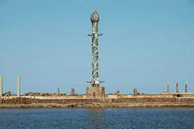

Parque das Esculturas Francisco Brennand
Ainda no Marco Zero, é dali que você parte para outro importante ponto: o Parque das Esculturas, uma instalação a céu aberto sobre o molhe do porto, composta por 90 obras do artista plástico Francisco Brennand, inaugurada em comemoração aos 500 anos do Descobrimento do Brasil. Dentre as esculturas, o destaque vai para a imponente Coluna de Cristal, que não passa despercebida com seus 32 metros de altura.
 Parque das Esculturas Francisco BrennandArmazéns do Porto
O Armazéns do Porto é o lugar ideal para aquela pausa para o almoço ou apenas para tomar um cafezinho ou uma cerveja para espantar o calor. O espaço fica bem ao lado do letreiro de Recife, na Praça do Marco Zero, e oferece uma variedade de bares, restaurantes, cafés e sorveterias. O mais legal de tudo é a vista privilegiada que se tem para o porto e para as esculturas de Brennand.
 Armazéns do Porto
Armazéns do Porto